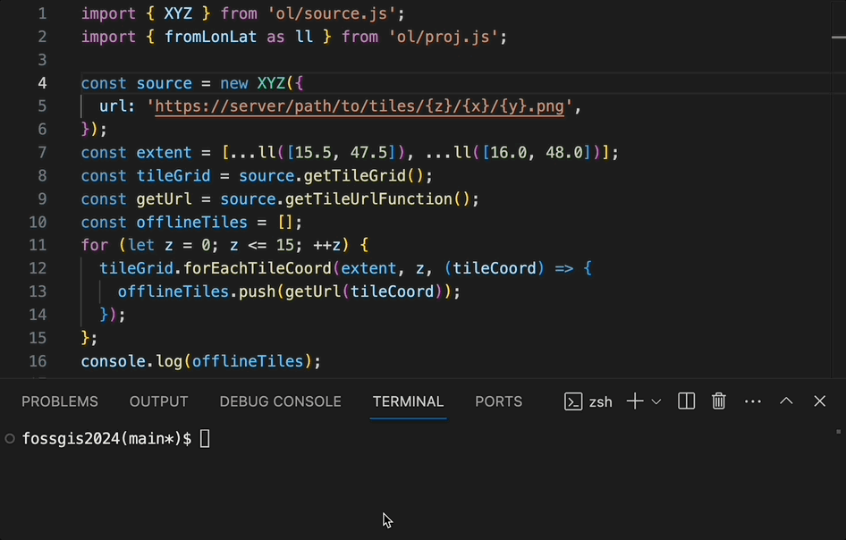

OpenLayers
mehr als nur Karten im Web
Andreas Hocevar, w3geo
Marc Jansen, terrestris
FOSSGIS 2024 | 22. März 2024 | Hamburg
Vorschau
- Kurze Vorstellung
- Einordnung
- Projektgeschichte
- OpenLayers im Browser
- OpenLayers ohne Browser
- Ausblick
Andreas Hocevar | w3geo
- Geschäftsführer w3geo
- Derzeit aktivster OpenLayers Entwickler
- Proj4.js, ol-mapbox-style, geotiff.js …
- Geospatial Expert
- JavaScript Entwickler aus Leidenschaft
Marc Jansen | terrestris
- Geschäftsführer terrestris
- Kernentwickler & PSC OpenLayers
- z.B. react-geo, SHOGun, GeoStyler
- Sprecher & Trainer
national & international - OSGeo Foundation Charter Member

Einordnung
- JavaScript, Open Source, aktive Community
- Governance durch die OSGeo Foundation
- Ähnliche Produkte: Leaflet, Mapbox/MapLibre GL
- Unterschied: Basiert auf Konzepten und Funktionen der Geoinformatik
- Daher: größerer Funktionsumfang, aber schwerer zu lernen
Projektgeschichte
- Ursprünglich entwickelt 2005 von MetaCarta, als Alternative zu Google Maps
- 2006: Open Source, "BSD-3-Clause-Clear" Lizenz
- 2008: Standard "BSD-2-Clause" Lizenz
- 2012: Neuentwicklung OpenLayers 3.0
- 2024: OpenLayers 9.0 – gereift, aktiv, aktuell
Mobile Sprint 2011
OpenLayers im Browser
Hallo Welt
import 'ol/ol.css';
import { Map, View } from 'ol';
import TileLayer from 'ol/layer/Tile';
import OSM from 'ol/source/OSM';
const map = new Map({
target: "map", // oder document.querySelector("#map"),
layers: [
new TileLayer({ source: new OSM() })
],
view: new View({
center: [0, 0],
zoom: 2
})
});Eine ganze App im Browser
- Vektorkarte von Esri
- Geolocation (z.B. GPS)
- Fotos verorten
- Benutzereingaben laden/speichern
Vektorkarte von Esri
const basemap = new Group();
apply(
basemap,
"https://www.arcgis.com/sharing/rest/content/items/659e7c1b1e374f6c8a89eefe17b23380/resources/styles/root.json",
{
transformRequest: (url) =>
url.replace(/\/VectorTileServer$/, "/VectorTileServer/"),
},
);
map.addLayer(basemap);
transformRequest
- URLs anpassen (für Authentifizierung oder spezielle Anforderungen)
- Esri verwendet HTTP & ReST falsch
Geolocation (z.B. GPS)
const updatePosition = ({ coords: { latitude, longitude } }) => {
const position = [longitude, latitude];
positionFeature.setGeometry(new Point(position));
};
navigator.geolocation.watchPosition(updatePosition);Fotos verorten
draw.on('drawend', ({feature}) => {
drawnFeature = feature;
map.removeInteraction(draw);
uppy.getPlugin('Dashboard').openModal();
});
uppy.on('complete', ({successful: [file]}) => {
drawnFeature.set('picture', file.uploadURL);
uppy.cancelAll();
uppy.getPlugin('Dashboard').closeModal();
});Benutzereingaben laden/speichern
const markers = new VectorSource();
const format = new GeoJSON();
// laden
if (localStorage.getItem('markers')) {
const geojson = localStorage.getItem('markers');
const features = format.readFeatures(geojson);
markers.addFeatures(features);
}
// speichern
markers.on('change', () => {
const features = markers.getFeatures();
const geojson = format.writeFeatures(features);
localStorage.setItem('markers', geojson);
});
OpenLayers ohne Browser
Beispiele
- Vektorformate konvertieren
- Offline Karten
- Map Rendering am Server
Vektorformate konvertieren
import { readFileSync, writeFileSync } from 'fs';
import { TopoJSON, GeoJSON } from 'ol/format';
const in = readFileSync('input.topojson', 'utf8');
const features = new TopoJSON().readFeatures(in);
const out = new GeoJSON().writeFeatures(features);
writeFileSync('output.json', out);Offline Karten
Map Rendering am Server
- Einfache Karten mit jsdom+canvas
- Komplexere Karten mit puppeteer
- Anwedungsmöglichkeiten: PDF-Karten, Thumbnails, ...
- ... oder ein Tileserver!
ol-tileserver
`${baseUrl}tiles/11/1080/662.png?style=${styleUrl}`
z=11, x=1080, y=662, type="png"
const resolution = tilegrid.getResolution(z);
const center = tilegrid.getTileCoordCenter([z, x, y]);
await page.evaluate(
(center, resolution) => requestMapImage(center, resolution),
center,
resolution,
);
result = await page.screenshot({
encoding: 'binary',
type,
clip: { x: 256, y: 256, width: 512, height: 512 },
});ol-tileserver
zurück im Browser, in OpenLayers
new TileLayer({
source: new XYZ({
url: `${baseUrl}tiles/{z}/{x}/{y}.png?style=${styleUrl}`,
tileSize: 512,
})
})ol-tileserver
Ausblick
✨- Keine von großen Firmen vorgegebene Roadmap
- npmjs.com Suche nach
openlayers:
571 packages
Bitte um Mithilfe
- https://github.com/sponsors/ahocevar/
- Pull requests welcome
- https://openlayers.org/
Danke!
Fragen oder Anmerkungen?
Impressum
Autoren & Kontakt
Marc Jansen
terrestris GmbH & Co. KG
Kölnstr. 99
53111 Bonn
Deutschland
jansen@terrestris.de
Andreas Hocevar
w3geo GmbH
Seidengasse 46
1070 Wien
Österreich
ahocevar@w3geo.at
terrestris GmbH & Co. KG
Kölnstr. 99
53111 Bonn
Deutschland
jansen@terrestris.de
Andreas Hocevar
w3geo GmbH
Seidengasse 46
1070 Wien
Österreich
ahocevar@w3geo.at
Lizenz
Diese Folien sind unter CC BY-SA veröffentlicht.